7 Knocks
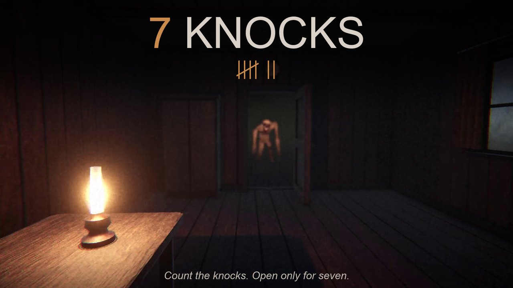
▶ Play in your browserWebGL, about 60 MB, best on desktop with headphones. Warning: flashing lights and loud jumpscares.
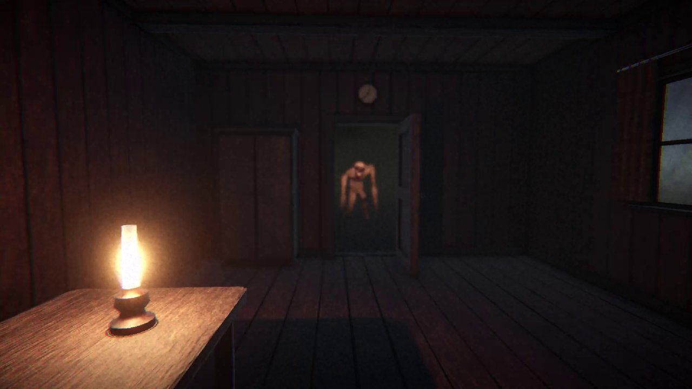
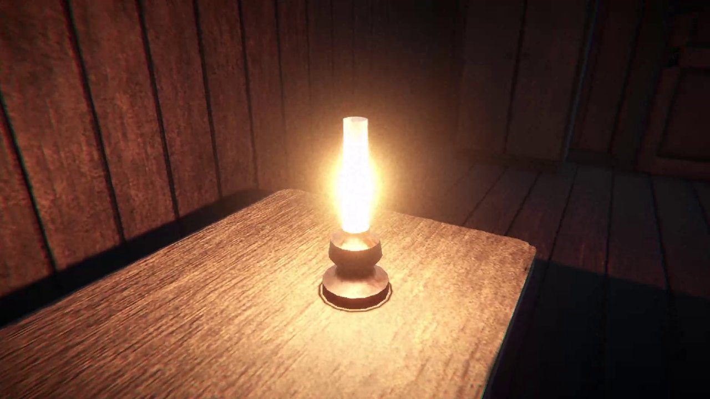
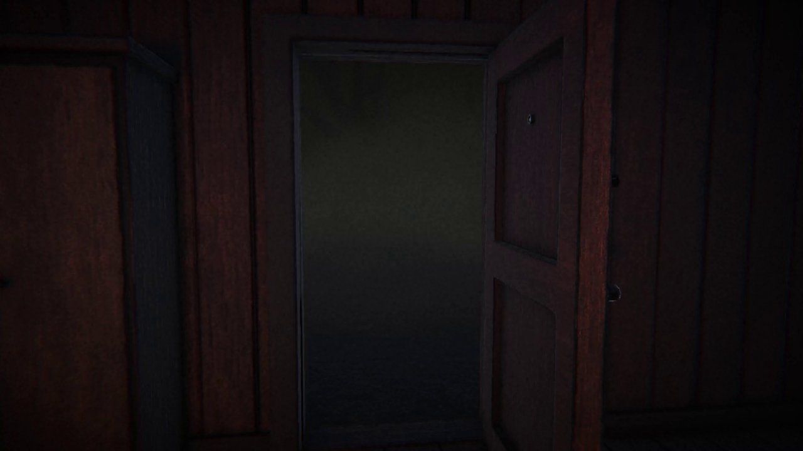
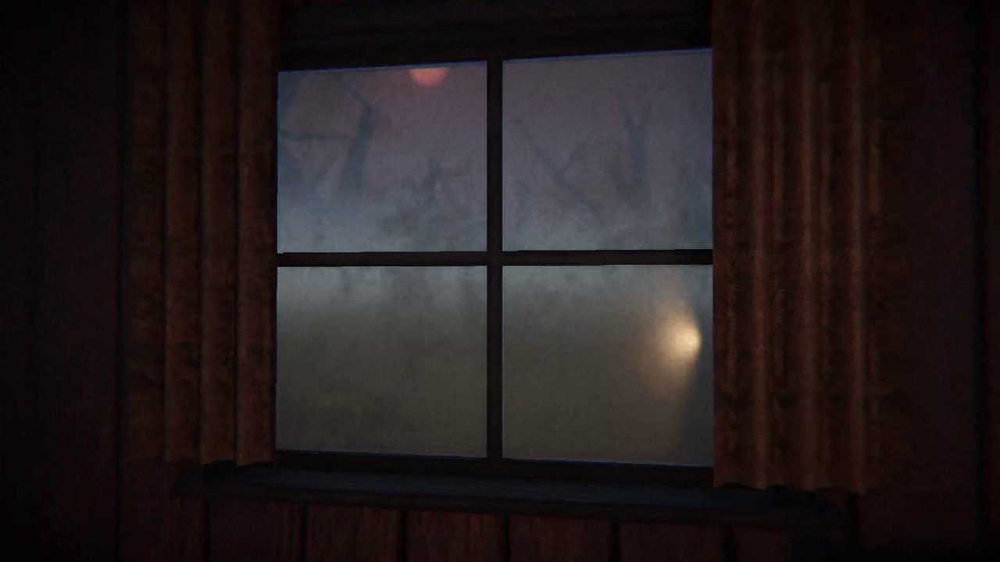
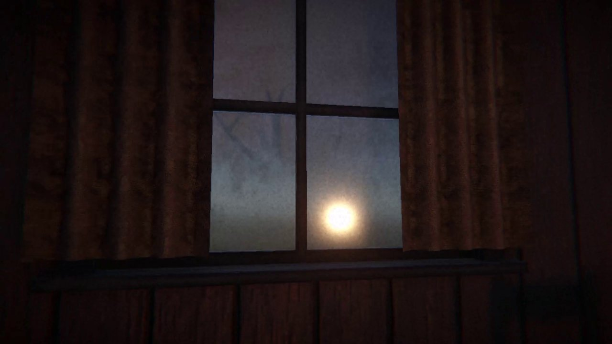
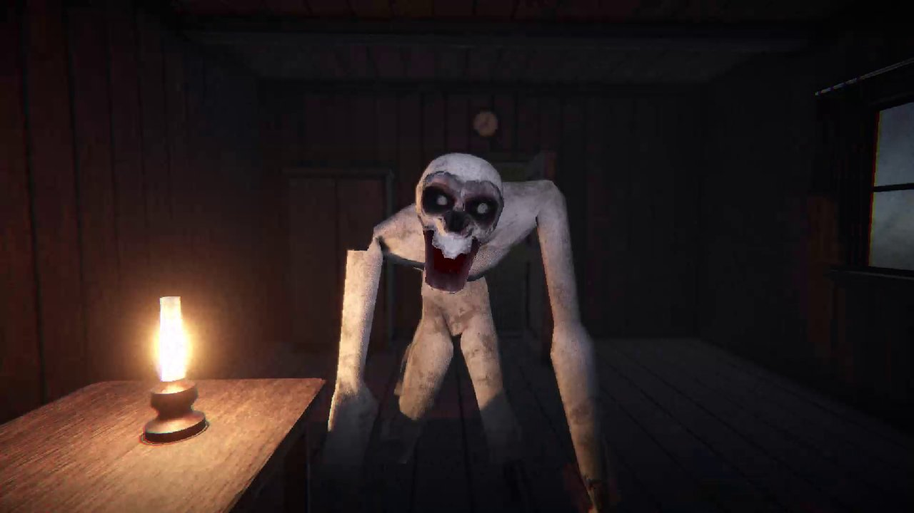
The Monster
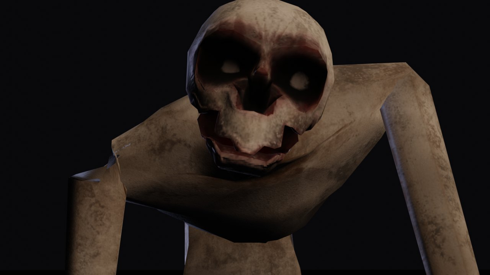
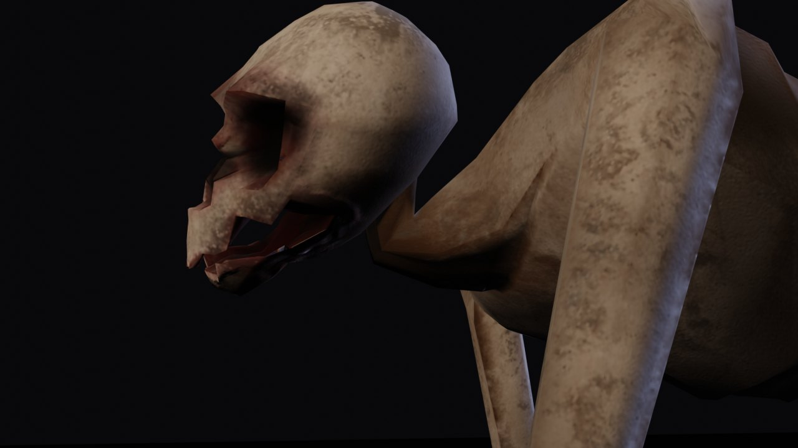
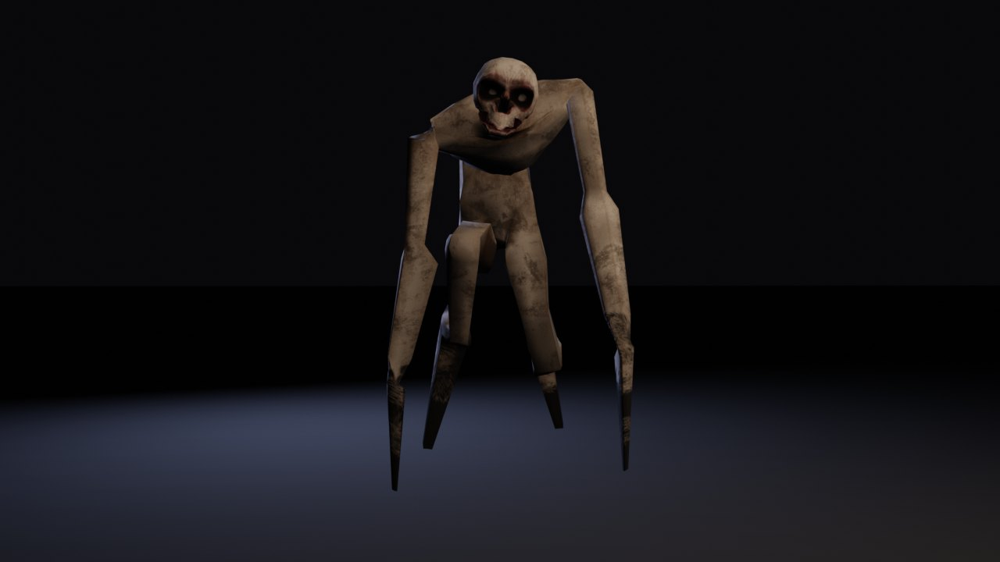
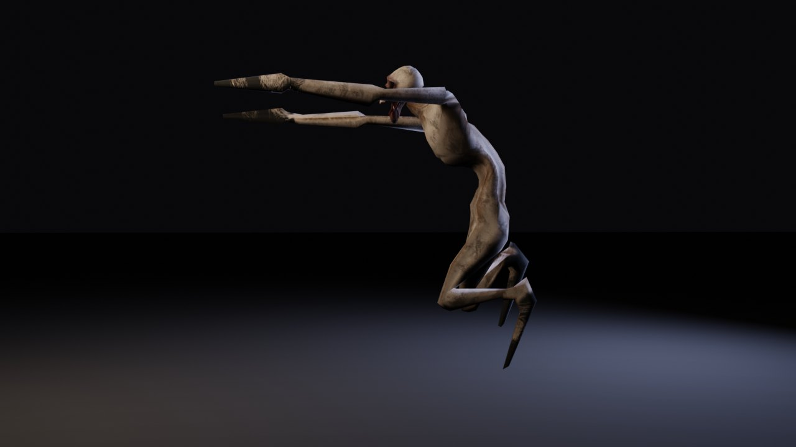
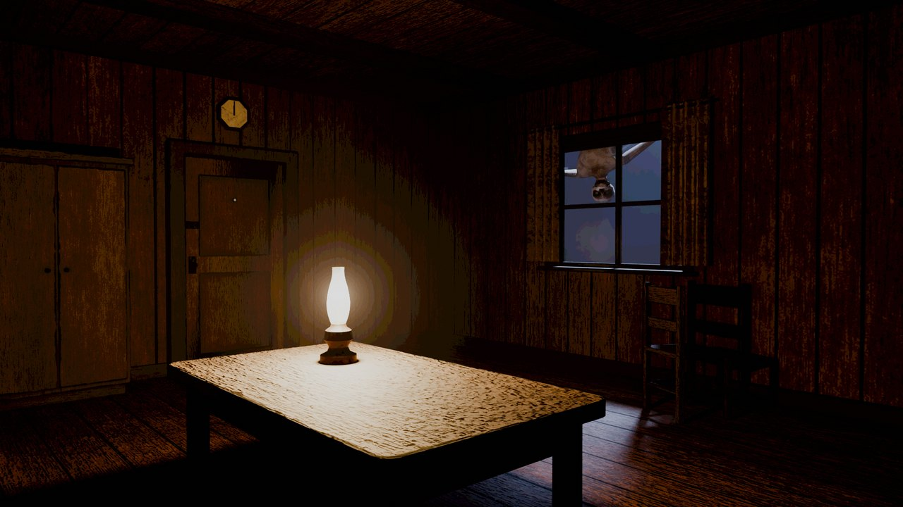
The Game
A first-person horror game I made in a week for the Official 2026 Unity Game Jam (theme: Lucky Number). You're alone in a cabin in a dead forest, and the oil lamp is running out. All night, something knocks. Visitors knock exactly seven times, and if you open for them they bring oil. Anything that knocks any other number of times isn't a visitor. The whole game is listening, counting and deciding whether to open the door.
My Role
Solo. I designed the game and its rules, made all of the art, and directed and tested every system. The art is entirely hand-made: the cabin and its props, the monster and the dead forest, modelled and UV-unwrapped in Blender and textured in Substance Painter. I used an AI coding assistant as the programmer (see below), with me setting the architecture, reviewing every change and rejecting what didn't fit.
One Rule for Where It Catches You
The scares follow one rule, modelled on Five Nights at Freddy's 4. If the monster gets in where you're standing (the door or the window), that place's scare plays. If you're anywhere else, it's already inside: the lamp flickers, you're drawn back to the table, and it comes for you there. It never goes through a closed door or window.
The first version was one script that had grown four scares, and every fix to one broke another. I had it restructured: each scare became its own component, sharing one "puppet" for the monster's mechanics, and a single
The first version was one script that had grown four scares, and every fix to one broke another. I had it restructured: each scare became its own component, sharing one "puppet" for the monster's mechanics, and a single
Intrusion class decides which one plays. After that, a new scare is a new component, and changing one can't break the others.
Art Pipeline
Every model is low-poly and hand-made. The room was built to measured dimensions, then textured in Substance Painter with one texture set per material group. The monster has a Blender rig with an IK control rig on top, and its animations (a grab, a four-legged run and an upright run that stays on its stub tips) are keyed on it. The animations are exported as Legacy clips, because Unity's WebGL player can't sample normal clips without an Animator. That bug was invisible in the editor and only showed up in a build.
Shipping to the Browser
WebGL has no audio mixer, so the levels are baked into the clip files and the source volumes, tuned so a single knock always reads, even under the storm. The build runs in a custom page template that fills its frame, so itch's fullscreen button scales the game up instead of leaving it in a corner. I ran a playtest during the jam and acted on it: a rebuilt controls panel, an eighth knock that came too late to be fair, and a rule that no visitor knocks while you're being walked back to the table.
How AI Was Used
Parts of the C# gameplay code, some animation keyframes and some of the menu and page text were developed with an AI tool (Claude). The design, the rules of the night, the scare design, the architecture decisions and the overall direction were mine, and I reviewed, played and tested all of it. The code wasn't used as-is: versions that broke other parts of the game or didn't match the design were rejected, and the scare system's architecture was restructured at my direction until it fit. All models were made by hand in Blender and textured in Substance Painter, and no images or sounds were generated by AI. My hand-written architecture work is in MilSim.